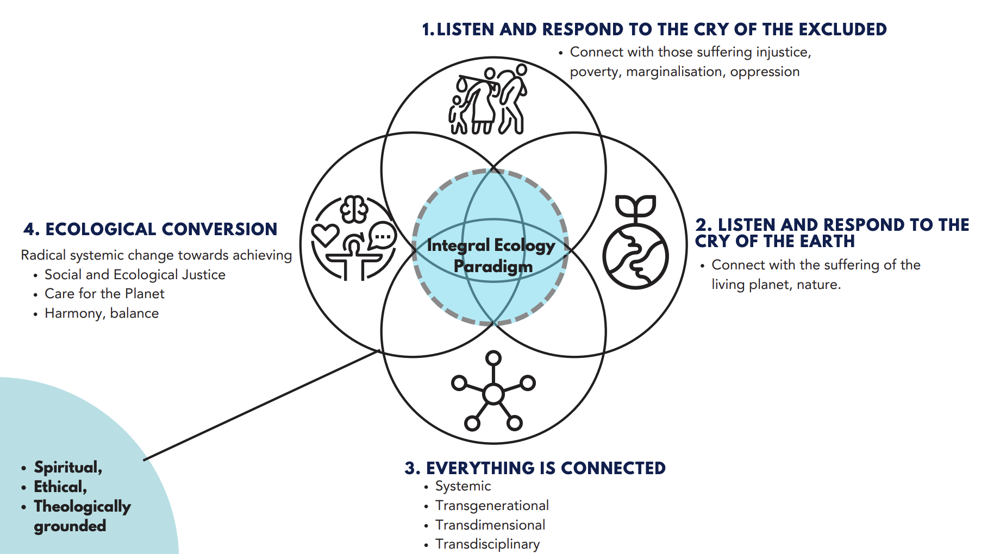

My Research
Coral reef fisheries in the Western Indian Ocean
Coral reefs support millions of fishers and provide ecosystem services such as food production and shoreline protection to over a billion people, most in tropical developing countries. Since 2021, I have studied the relationship between fishery management, ecological function, and the production of dietary nutrients and biomass in the artisanal coral reef fisheries of the Western Indian Ocean. In Kenya, we found that traditional management measures, such as gear modification and length-based approaches, are associated with higher nutrient yields in unselective coral reef fisheries (Galligan, McClanahan, et al., 2022; Galligan & McClanahan, 2024a). We also studied the the factors that drive nutrient composition of fish catches across the Western Indian Ocean and how these can be leveraged by managers to support the health of coastal populations (Galligan & McClanahan, 2024b). My current work investigates the recovery rates of fish communities after the implementation of fishery closures.
Commercial fisheries in Rhode Island, U.S.A.
The estuarine and marine ecosystems of Rhode Island, U.S.A., are undergoing profound shifts due to climate change, improved nutrient management, and rapidly evolving commercial fisheries. The combination of environmental change with the availability of several long-term data sets makes this region a fascinating natural laboratory. With researchers at the Rhode Island Division of Marine Fisheries, I investigated relationships between water quality and Narragansett Bay Quahog Mercenaria mercenaria abundance. We found evidence that reduced hypoxia has made juvenile clams more vulnerable to predators, leading to smaller cohorts and lower recruitment in areas where hypoxic refugia have diminished (Galligan, Stuart, et al., 2022). I currently have active projects studying both Quahogs and Winter Flounder Pseudopleuronectes americanus.


Science, ethics, and theology
As a Jesuit in formation to be a Catholic priest, I am deeply inspired by the thought of Pope Francis, who writes (2015, no. 139):
“We are faced not with two separate crises, one environmental and the other social, but rather with one complex crisis which is both social and environmental. Strategies for a solution demand an integrated approach to combating poverty, restoring dignity to the excluded, and at the same time protecting nature.”
My own “integrated approach” has meant incorporating ethical reflection and policy advocacy alongside scientific research. It also motivates me to work with marginalized communities and produce the kinds of knowledge that will serve their needs. For a full explanation of what integral ecology can look like as a research method, see the briefing note I developed in collaboration with a colleague at the Laudato Si’ Research Institute at the University of Oxford (Zepeda & Galligan, 2023). In the past, I have worked to put fisheries law and policy in conversation with social ethics (Galligan, 2021; Galligan et al., 2024). My upcoming work in this area will unpack biblical perspectives on ecology and food.
